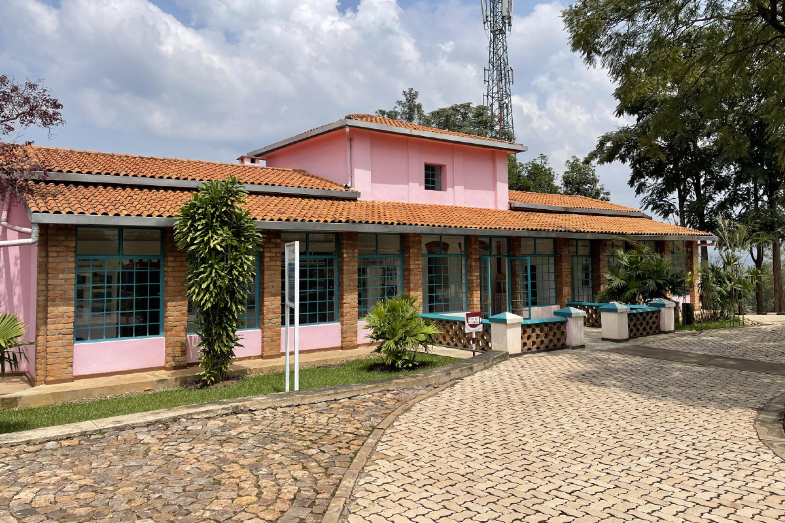

📍 Kandt House Museum
The Kandt House Museum is one of the oldest buildings in Kigali. It was once the home of Richard Kandt, the first colonial governor of Rwanda.

The Kandt House Museum is one of the oldest buildings in Kigali. It was once the home of Richard Kandt, the first colonial governor of Rwanda.
Kandt House Museum is a great place to understand how Kigali developed into the city it is today.